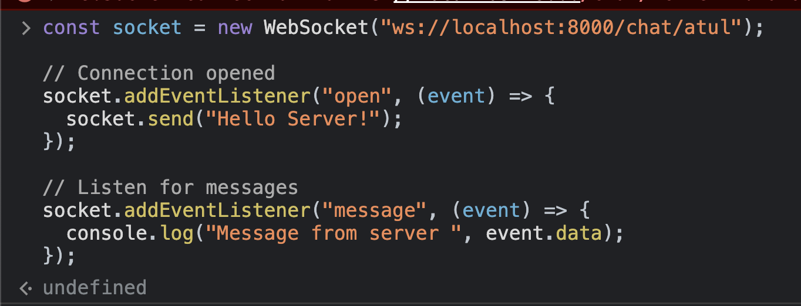

Contents
- Abstract
- What is Armeria and its features?
- Project details
- Project setup requirements
- Setting up Armeria and service handler
- Setting up the web socket handler
- Show example in the browser console
- Socket service for frontend
- Code snippet of the chat screen
- Working example Screenshots etc
- Conclusion
- Acknowledgements
- References
Abstract
As a part of E4R (Engineering for Research) retreat Hackathon, we explored Armeria and created a small PoC single group chat application using HTTP request polling and websockets. We are using the Armeria framework to develop one of the services in our project. So, it became the inspiration for the exploration.
This blog constitutes building a small chat application using REST API framework Armeria, Scala, and JavaScript. It won’t have end-to-end code but only contains code snippets. You can find code on here.
What is Armeria?
Armeria is a REST API microservice framework that becomes a backbone of powerful, fast, and asynchronous web services. It is completely asynchronous and built on top of reactive streams and Java 8 CompletableFuture. It is built in Java and compatible with any language that runs on JVM such as Scala, Kotlin, Clojure, etc.
It lets you develop services with technologies like gRPC, Thrift, HTTP, etc. running on the same application and port.
I think this introduction to Armeria would be enough to get a basic understanding. If you are more interested in Armeria’s features, please have a look at its official website. Now let’s see Armeria in action with the help of a small chat application.
About PoC
We are going to build a single group chat application comprising a backend service in Scala using the Armeria framework and a frontend service using React/Javascript.
Prerequisites
To get started with the project, we have to have some required prerequisites.
- Java 17 or more installed
- Scala installed and sbt
- Node v17 or more
- And an IDE of your choice.
Setting up the project
Assuming all the prerequisites done, create a new project using sbt.
mkdir chat-app
cd chat-app
sbtIt setups the project. Now we need to create build.sbt and write the following inside it.
ThisBuild / version := "0.1.0-SNAPSHOT"
ThisBuild / scalaVersion := "3.3.0"
lazy val root = (project in file("."))
.settings(
name := "chat-app-retreat",
libraryDependencies ++= Seq(
"com.linecorp.armeria" "upickle" % "3.0.0"
)
)Create src directory with the following basic structure.
src
├── main
│ ├── resources
│ └── scala
└── test
└── scala
Now reload the project using sbt reload.
Create a service handler in Main.scala
Creating a simple server in Armeria is very simple as below code snippet shows. For now, we only have a single handler on path "/" that responds with OK.
object Main:
def main(args: Array[String]): Unit =
val port: Int = 8000
val server: Server = newServer(port)
val future = server.start()
future.join()
logger.info(s"Server is running on port $port")
private def newServer(port: Int) =
val serverBuilder: ServerBuilder = Server.builder()
serverBuilder
.http(port)
.service(
"/",
(ctx, req) => HttpResponse.of(HttpStatus.OK)
)
.requestTimeout(Duration.ofSeconds(1000))
.build()A handler or a service is attached to the server using service method. We can also have an annotated controller similar to Spring Boot that can be attached using annotatedService method.
Running this and sending request to our server, we get 200 OK. Cool, our server works.
⟩ curl http://localhost:8000/
200 OK⏎Creating message endpoints
We require to create two endpoints for creating and fetching all the messages.
GET /e4r/messagePOST /e4r/create-message
Supposing we have a ChatController which handlers messages services. Adding it to server would like as shown below.
private def newServer(port: Int) =
val serverBuilder: ServerBuilder = Server.builder()
serverBuilder
.http(port)
.service(
"/",
(ctx, req) => HttpResponse.of(HttpStatus.OK)
)
.annotatedService(
"/e4r",
ChatController(ChatService(new ChatRepository))
)
.requestTimeout(Duration.ofSeconds(1000))
.build()Adding two handlers in ChatController
class ChatController(chatService: ChatService):
@Get("/message")
def getMessages: HttpResponse =
val result = chatService.getMessages
HttpResponse.ofJson(HttpStatus.OK, messages)
@Post("/create-message")
@RequestConverter(classOf[JacksonRequestConverterFunction])
def createMessage(message: MessageDTO): HttpResponse =
chatService
.createMessage(message.toMessage)
HttpResponse.of(HttpStatus.CREATED)
Sending request on /e4r/message returns all the messages in group. /e4r/create-message creates a new message.
⟩ curl -X POST --header "content-type: application/json" -d '{"sender":"@atul", "text": "Hey there!", "createdAt": "2023-08-03T09:30:37.258Z"}' http://localhost:8000/e4r/create-message
201 Created
⟩ curl -q http://localhost:8000/e4r/message | jq
[
{
"id": "d69f836c-eac7-48dc-9138-9d2d40b38f4c",
"sender": "@atul",
"text": "Hey there!",
"createdAt": 1692114770.973873
},
{
"id": "50ca044a-0f2b-4904-902f-297946c30413",
"sender": "@atul",
"text": "Hey there!",
"createdAt": 1691055037.258
}
]Implementing Websocket handler
To make the chat experiment real-time, we are required to use web sockets. Web socket is a protocol that creates a full duplex connection among devices. Want to deep dive into web sockets? You can have a read about it over this.
Talking about Armeria, it has got web socket support in recent versions and that’s why there is no rich documentation on it. However, we managed to get some implementation of web sockets by going through the code and tests.
Let’s attach a socket service to our server.
val socketService = new SocketService()
socketService.on("new-message", (data) => println(data))
socketService.on { (data) =>
println("from broadcast")
println(data)
}
private def newServer(port: Int) =
val serverBuilder: ServerBuilder = Server.builder()
serverBuilder
.http(port)
.service(
"/",
(ctx, req) => HttpResponse.of(HttpStatus.OK)
)
.service(
"/chat/:clientId",
WebSocketService.builder(socketService).allowedOrigins("*").build()
)
.annotatedService(
"/e4r",
ChatController(ChatService(new ChatRepository))
)
.requestTimeout(Duration.ofSeconds(1000))
.build()WebSocketService builder takes socketService and builds a websocket handler. Method allowOrigins let’s it accept connection from any origin.
Following code snippet shows SocketService.
class SocketService extends WebSocketServiceHandler:
override def handle(ctx: ServiceRequestContext, in: WebSocket): WebSocket =
val writer: WebSocketWriter = WebSocket.streaming()
in.subscribe(new Subscriber[WebSocketFrame]:
def onSubscribe(s: Subscription): Unit =
s.request(Long.MaxValue)
def onNext(webSocketFrame: WebSocketFrame): Unit =
try
val frame = webSocketFrame
try
frame.`type` match
case WebSocketFrameType.TEXT =>
// call handlers
getAllHanders.foreach((cb) => cb(frame.text()))
case WebSocketFrameType.CLOSE =>
val closeFrame = frame.asInstanceOf[CloseWebSocketFrame]
writer.close(closeFrame.status, closeFrame.reasonPhrase)
case _ =>
// do nothing
catch
case jsonException: ujson.ParseException =>
println(jsonException)
case t: Throwable =>
writer.close(t)
finally println("finally")
catch
case t: Throwable =>
println(t)
def onError(t: Throwable): Unit =
writer.close(t)
def onComplete(): Unit =
println("CLOSED")
writer.close
)
writer
def emit(namespace: String, data: String): Unit =
this.socketWriters.values.foreach((writer) =>
writer.write(this.createPayload(namespace, data, "namespaced"))
)
SocketService extends WebSocketServiceHandler. The important method to implement is handle which triggers every time any client connects with the server.
Armeria implements Websocket using reactive streams. So, a subscriber is attached to the web socket reactive stream in on every new connection. The writer stream is used to write data to the connected client socket.
writer.write("Hello world")emit is the method that takes a namespace and data. Any handler on the client side listening on this namespace will get that data.
So, whenever a new message is created, all the connected clients have to be notified about the message. This can be accomplished using,
class ChatController(chatService: ChatService, socket: SocketService):
// ...
@Post("/create-message")
@RequestConverter(classOf[JacksonRequestConverterFunction])
def createMessage(message: MessageDTO): HttpResponse =
socket.emit("new-message", message.toJson)
chatService
.createMessage(message.toMessage)
HttpResponse.of(HttpStatus.CREATED)
new-message is namespace and message.toJson is data.
Let’s try creating a message and see if we get new message on client socket.

So, the client is connected to the server. Creating a new message triggers a message event on client socket. The below picture shows the message it got from the server.

Our simple chat application (without any UI 😂) is working.
Implementing Socket on UI
Similar to backend, we have written a wrapper on top of WebSocket. This simplistic wrapper manages namespaces and invokes handlers listening on respective namespaces.
type fn = { (data: string): void };
class ChatSocket {
handlers: { [key: string]: fn[] };
//...
connect() {
this.socket = new WebSocket(this.url + `/${this.username}`);
this.socket.addEventListener('open', () => {
console.log('socket connected');
});
this.socket.addEventListener('message', (event: MessageEvent) => {
const { namespace, data } = JSON.parse(event.data);
this.handlers[namespace].forEach((cb) => cb(data));
});
this.socket.addEventListener('close', (event) =>
console.log('Closed', event)
);
return this;
}
//...
}To register a handler, wrapper implements an on method.
class ChatSocket {
//...
on(namespace: string, cb: fn): void {
const handlers = this.handlers[namespace];
if (handlers) {
handlers.push(cb);
return;
}
this.handlers[namespace] = [cb];
}Using Socket wrapper in Chat component
As of now, we are only listening on new messages. We are not sending messages using socket. Messages are created using HTTP REST request only.
Following shows usages of socket wrapper in a chat component.
const Chats = ({ chatService, username }: ChatAppProps) => {
//...
useEffect(() => {
//...
const chatSocket = new ChatSocket(
'ws://localhost:8000/chat',
username
).connect();
chatSocket.on('new-message', (message: Message) =>
setMessages((prevMessages: Message[]) => [...prevMessages, message])
);
}, []);
//...
};useEffect hook initialises the socket and socket starts listening on new-message namespace. Whenever a new message comes, setMessages updates the messages state and the component updates.
Conclusion
Armeria is a newly developed framework which is currently in development. It provides several powerful features such as allowing to run different services within a single application and on the same port. It also provides asynchronous execution out of the box. So, it can handle multiple requests without us implementing concurrency and get our hands dirty in threads and concurrency. If you are looking for a lightweight, fast, asynchronous, and ready-to-use REST API framework, it is a good choice to go with.
However, being a new framework, the documentation is undeveloped. We tried to find the implementation of web sockets by going inside the tests they’ve created.
Acknowledgements
We would like to thank Satya and the Retreat team for organising such an interesting Retreat. Thanks to all the team members (Shubham Chauhan and Atul) who have chosen this trivial problem statement to explore.
References
- Armeria Official Docs. URL: https://armeria.dev/docs/
- Armeria Github Repo. URL: https://github.com/line/armeria
- Trustin Lee — Armeria: A microservice framework well-suited everywhere. Youtube. URL: https://www.youtube.com/watch?v=Vr-0GKUmzo8&t=2780s&ab_channel=JPoint%2CJoker%D0%B8JUGru
- Armeria: A microservice framework well-suited everywhere. URL: https://speakerdeck.com/trustin/armeria-a-microservice-framework-well-suited-everywhere